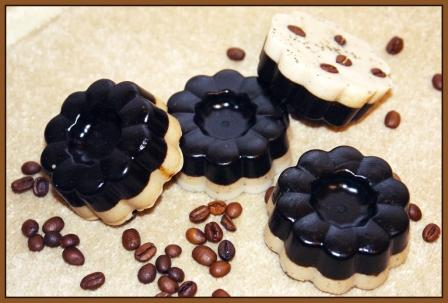

Мыло "Банное"

Описание
Косметическое мыло, в состав которого входят: натуральная мыльная основа, белая мыльная основа, глицерин(увлажняет и смягчает кожу), молотый кофе(антицеллюлитный эффект, отшелушивает омертвевшие клетки кожи, улучшает эластичность), горький шоколад (питает кожу, способствует восстановлению эластичности кожи, обладает антистрессовым воздействием), мед( глубоко питает и смягчает кожу, улучшает цвет лица, имеет омолаживающий эффект). Отдушка «шоколад».
Состав
- натуральная мыльная основа - 60гр.
- белая мыльная основа - 30гр.
- молотый кофе - 1/2 чайная ложка
- тертый горький шоколад - 1/2 чайная ложка
- мед - 1/2 чайная ложка
- глицерин - 1/2 чайная ложка
- отдушка "Шоколад" - 8 капель
- любая форма для 100 граммового мыла
Рецепт
- Растопите натуральную мыльную основу на водяной бане или в микроволновой печи, не доводя до кипения.
- Добавьте глицерин, часть оставьте для белого мыла.
- 3 капли отдушки "Шоколад".
- Отдельно на водяной бане растопите мед, добавьте туда шоколад и мототый кофе.
- Соедините мыльную основу со скрабом постепенно помешивая.
- В другой емкости растопите на водяной бане белую основу.
- Добавьте в белую основу оставшийся глицерин, отдушку "Шоколад" 5 капель, и пару капель для песочного оттенка первой смеси из мыльной основы.
- Возьмите форму, промажьте оливковым маслом (чтобы легче было вынуть).
- Залейте наполовину мыльной смесью с кофе и поставьте в холодильник минут на 10.
- Залейте наполовину мыльной смесью с кофе и поставьте в холодильник минут на 10.
- Залейте до конца формы вторую смесь с белой мыльной основой.
- Украсьте зернами кофе (украшать надо сразу и быстро, пока не стал застывать верхний слой).
- Поставьте в холодильник на 30 минут.